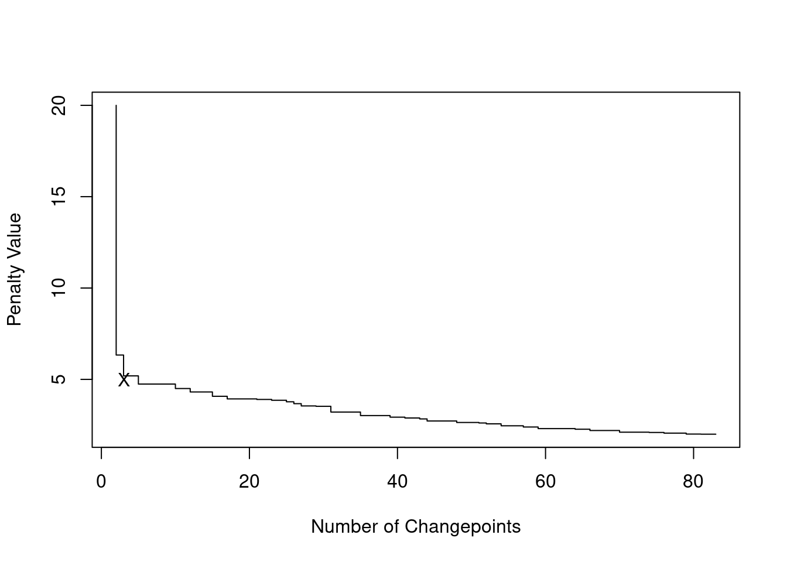
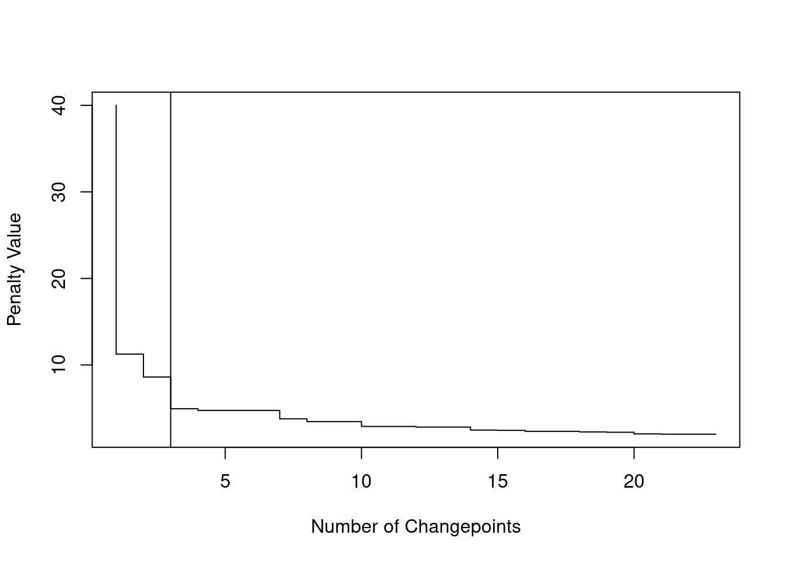

4 PELT, WBS and Penalty choices
4.1 Drawbacks of OP and BS
When deciding which segmentation approach to use, Binary Segmentation (BS) and Optimal Partitioning (OP) each offer different strengths. The choice largely depends on the characteristics of the data and the goal of the analysis.
4.1.1 Quality of the Segmentation
Generally, Optimal Partitioning (OP) provides the most accurate segmentation, especially when we have a well-defined model and expect precise changepoint detection. OP ensures that the solution is optimal by globally minimizing the cost function across all possible segmentations. This is ideal for datasets with clear changes, even if noise is present.
Let’s consider a case with true changepoints at \(\tau = 100, 200, 300\), and segment means \(\mu_{1:4} = 2, 1, -1, 1.5\):
While the underlying signal follows these clear shifts, noise complicates segmentation. Binary Segmentation uses a greedy process where each iteration looks for the largest changepoint. Although fast, this local search can make mistakes if the signal isn’t perfectly clear, particularly in the early stages of the algorithm. For example, running BS on this dataset introduces a mistake at \(\tau = 136\), as shown in the plot below:

This error is carried in the subsequent steps, and the full binary segmentation algorithm will output an additional change at \(\tau = 136\)… Optimal Partitioning (OP), on the other hand, evaluates all possible segmentations considers the overall fit across the entire sequence. It is therefore less susceptible to adding “ghost” changepoints, as rather than focusing on the largest change at each step.
To illustrate, we compare the segmentations generated by both approaches:

4.1.2 Computational Complexity
Well, you may ask why not using OP all the time, then? Well, in changepoint detection, in which is the most appropiate method, we often have to keep track of the computational performance too, and Binary Segmentation is faster on average. For this reason, for large datasets where approximate solutions are acceptable, it might be the best option.
Specifically:
Binary Segmentation starts by dividing the entire sequence into two parts, iteratively applying changepoint detection to each segment. In the average case, it runs in \(\mathcal{O}(n \log n)\) because it avoids searching every possible split point. However, in the worst case (if all data points are changepoints), the complexity can degrade to \(\mathcal{O}(n^2)\), as each step can require recalculating test statistics for a growing number of segments.
Optimal Partitioning, on the other hand, solves the changepoint problem by recursively considering every possible split point up to time \(t\). The result is an optimal segmentation, but at the cost of \(\mathcal{O}(n^2)\) computations. This holds true for both the average and worst cases, as it always requires a full exploration of all potential changepoints.
4.2 PELT and WBS
Good news is, despite both algorithms have drawbacks, following recent developments, those have been solved. In the next sections, we will introduce two new algorithms, PELT and WBS.
4.2.1 PELT: an efficient solution to OP
In OP, we can reduce the numbers of checks to be performed at each iteration, reducing the complexity. This operation is called pruning. Specifically, on the condition that there exists a constant \(\kappa\) such that for every \(l < t < u\):
\[ \mathcal{L}(y_{l + 1:t}) + \mathcal{L}(y_{t + 1:u}) + \kappa \leq \mathcal{L}(y_{l + 1:u}) \]
It is possible to prune without resorting to an approximation. For many cost functions, such as the Gaussian cost, such a constant exists. Equating \(\kappa\) to the penalty \(\beta\), gives us a computational trick to improve on the efficiency… The PELT algorithm – acronym for Pruned Exact Linear Time – (Killick, Fearnhead, and Eckley (2012)) solves exactly the penalised minimization of Equation 3.4 with an expected computational cost that can be linear in \(n\) – while still retaining \(\mathcal{O}(n^2)\) computational complexity in the worst case. This is achieved by reducing the number of segment costs to evaluate at each iteration via an additional pruning step based on Condition Equation 3.4. That is, if \[\mathcal{Q}\tau + \mathcal{L}(y_{\tau + 1:t}) + \beta + \kappa \geq \mathcal{Q}_t \] then we can safely prune the segment cost related to \(\tau\), as \(\tau\) will never be the optimal changepoint location up to any time \(T > t\) in the future.
The intuition, is that, when \(\kappa = -\beta\), our penalty, then we would prune at every change detected. And if the changes increase linearly with the length of the data, this means that our algorithm will achieve a \(\mathcal{O}(n \log n)\) computational complexity, without any drawbacks!

To reduce computational complexity, we can slightly modify the OP algorithm, to add the pruning condition above:
| PELT |
INPUT: Time series \(y = (y_1, ..., y_n)\), penalty \(\beta\)
OUTPUT: Optimal changepoint vector \(cp_n\)
Initialize \(\mathcal{Q}_0 \leftarrow -\beta\)
Initialize \(cp_0 \leftarrow \{\}\)
Initialise \(R_1 = \{0\}\)
FOR \(t = 1, \dots, n\)
\(\mathcal{Q}_t \leftarrow \min_{\tau \in R_t} \left[ \mathcal{Q}_{\tau} + \mathcal{L}(y_{\tau + 1:t}) + \beta \right]\)
\(\hat\tau \leftarrow \text{arg}\min_{\tau \in R_t} \left[ \mathcal{Q}_{\tau} + \mathcal{L}(y_{\tau + 1:t}) + \beta \right]\)
\(cp_t \leftarrow (cp_{\hat\tau}, \hat\tau)\) // Append the changepoint to the list at the last optimal point
\(R_{t+1} \leftarrow \{\tau \in \{R_t \cup \{t\}\} : \mathcal{Q}_\tau + \mathcal{L}(y_{\tau + 1:t}) \leq \mathcal{Q}_t \}\) // prune the non-optimal changepoint locations
RETURN \(cp_n\)
OUTPUT: Optimal changepoint vector \(cp_n\)
Initialize \(\mathcal{Q}_0 \leftarrow -\beta\)
Initialize \(cp_0 \leftarrow \{\}\)
Initialise \(R_1 = \{0\}\)
FOR \(t = 1, \dots, n\)
\(\mathcal{Q}_t \leftarrow \min_{\tau \in R_t} \left[ \mathcal{Q}_{\tau} + \mathcal{L}(y_{\tau + 1:t}) + \beta \right]\)
\(\hat\tau \leftarrow \text{arg}\min_{\tau \in R_t} \left[ \mathcal{Q}_{\tau} + \mathcal{L}(y_{\tau + 1:t}) + \beta \right]\)
\(cp_t \leftarrow (cp_{\hat\tau}, \hat\tau)\) // Append the changepoint to the list at the last optimal point
\(R_{t+1} \leftarrow \{\tau \in \{R_t \cup \{t\}\} : \mathcal{Q}_\tau + \mathcal{L}(y_{\tau + 1:t}) \leq \mathcal{Q}_t \}\) // prune the non-optimal changepoint locations
RETURN \(cp_n\)
As the segmentation retained is effectively the same, there are literally no disadvantages in using PELT over OP, if the cost function allows to do so.
However, PELT still has some disadvantages:
PELT pruning works only over some cost functions, those for which the condition above is true. For example, in a special case of change-in-slope, as we will see in the workshop, we have that the cost from the next change depends on the location of the previous one, making it impossible for PELT to prune without loosing optimality.
We mentioned above how PELT over iterations at which a change is detected. For signals where changes are not frequent, PELT does not benefits from. A more sophisticated approach is that of FPOP, that prunes at every iteration. FPOP employs a different type of pruning, called functional pruning, that at every iteration only check costs that are likely associated to a change. However, despite the pruning is stronger FPOP works only over few selected models.
4.2.2 WBS: Improving on Binary Segmentation
In BS, one of the issues that may arise, is an incorrect segmentation. WBS, Fryzlewicz (2014), is a multiple changepoints procedures that improve on the BS changepoint estimation via computing the initial segmentation cost of BS multiple times over \(M + 1\) random subsets of the sequence, \(y_{s_1:t_1}, \dots, y_{s_M:t_M}, y_{1:n}\), picking the best subset according to what achieves the smallest segmentation cost and reiterating the procedure over that sample accordingly. The idea behind WBS lies in the fact that a favorable subset of the data \(y_{s_m:t_m}\) could be drawn which contains a true change sufficiently separated from both sides \(s_m, t_m\) of the sequence. By the inclusion of the \(y_{1:n}\) entire sequence among the subsets, it is guaranteed that WBS will do no worse than the simple BS algorithm.
We can formally provide a description of WBS as a recursive procedure again, just adding a couple of alterations to the original Binary Segmentation:
\(\text{WBS}(y_{s:t}, \beta)\)
INPUT: Subseries \(y_{s:t} = \{y_s, \dots, y_t\}\) of length \(t - s + 1\), penalty \(\beta\)
OUTPUT: Set of detected changepoints \(cp\)
IF \(t - s \leq 1\)
RETURN \(\{\}\) // No changepoint in segments of length 1 or less
Draw \(\mathcal{M} = \{ [s_1, t_1], \dots, [s_M, t_M] \}\) tuples of subset indexes;
\(\mathcal{M} \leftarrow \mathcal{M} \cup \{[1, n]\}\)
COMPUTE
\(\mathcal{Q} \leftarrow \underset{\substack{[s_m, t_m] \in \mathcal{M}\\ \tau \in \{s_m, \dots, t_m\}}}{\min} \left[ \mathcal{L}(y_{s:\tau}) + \mathcal{L}(y_{\tau+1:t}) - \mathcal{L}(y_{s:t}) + \beta \right]\)
IF \(\mathcal{Q} < 0\)
\(\hat{\tau} \leftarrow \underset{\substack{[s_m, t_m] \in \mathcal{M}\\ \tau \in \{s_m, \dots, t_m\}}}{\text{arg}\min} \left[ \mathcal{L}(y_{s:\tau}) + \mathcal{L}(y_{\tau+1:t}) - \mathcal{L}(y_{s:t}) \right]\)
\(cp \leftarrow \{ \hat{\tau}, \text{WBS}(y_{s:\hat{\tau}}, \beta), \text{WBS}(y_{\hat{\tau}+1:t}, \beta) + \hat\tau \}\)
RETURN \(cp\)
RETURN \(\{\}\) // No changepoint if \(-LR/2\) is above penalty \(- \beta\)
OUTPUT: Set of detected changepoints \(cp\)
IF \(t - s \leq 1\)
RETURN \(\{\}\) // No changepoint in segments of length 1 or less
Draw \(\mathcal{M} = \{ [s_1, t_1], \dots, [s_M, t_M] \}\) tuples of subset indexes;
\(\mathcal{M} \leftarrow \mathcal{M} \cup \{[1, n]\}\)
COMPUTE
\(\mathcal{Q} \leftarrow \underset{\substack{[s_m, t_m] \in \mathcal{M}\\ \tau \in \{s_m, \dots, t_m\}}}{\min} \left[ \mathcal{L}(y_{s:\tau}) + \mathcal{L}(y_{\tau+1:t}) - \mathcal{L}(y_{s:t}) + \beta \right]\)
IF \(\mathcal{Q} < 0\)
\(\hat{\tau} \leftarrow \underset{\substack{[s_m, t_m] \in \mathcal{M}\\ \tau \in \{s_m, \dots, t_m\}}}{\text{arg}\min} \left[ \mathcal{L}(y_{s:\tau}) + \mathcal{L}(y_{\tau+1:t}) - \mathcal{L}(y_{s:t}) \right]\)
\(cp \leftarrow \{ \hat{\tau}, \text{WBS}(y_{s:\hat{\tau}}, \beta), \text{WBS}(y_{\hat{\tau}+1:t}, \beta) + \hat\tau \}\)
RETURN \(cp\)
RETURN \(\{\}\) // No changepoint if \(-LR/2\) is above penalty \(- \beta\)
One of the major drawbacks of WBS is that in scenarios where we find frequent changepoints, in order to retain a close-to-optimal estimation, one should draw a higher number of \(M\) intervals (usually of the order of thousands of intervals). This can be problematic given that WBS has computational complexity that grows linearly in the total length of the observations of the subsets.
4.3 Penalty Selection
In previous sections, we applied the changepoint detection algorithms using a penalty term of \(2 \log(n)\). As we’ll see, this is the BIC penalty (Bayes Information Criterion), a widely used penalty in changepoint detection. However, it is important to note that BIC is just one of several penalty types that can be applied…
As in the single change, some penalty may be more conservative then others! Choosing the correct penalty is key to obtaining a sensible segmentation of the data. The penalty term plays a significant role in balancing the goodness-of-fit of the model with its complexity:
- A lower penalty may lead to an over-segmentation, where too many changepoints are detected
- A higher penalty could under-segment the data, missing important changepoints.
The three most common penalties, are:
AIC (Akaike Information Criterion): The AIC penalty takes value of \(2p\), where \(p\) is the number of parameters that one adds to the model. In multiple changes scenario, every new change, we add a new parameter to the model (as we estimate the signal). This, in OP and BS approaches, where the penalty is added at different iterations, shouls we fit a change, this translates in \(\beta = 2 \times 2 = 4\) as our \(\beta\). While simple to apply, AIC is known to be asymptotically inconsistent: it tends to overestimate the number of changepoints as the sample size increases. Intuitively, this is because AIC is designed to minimize the prediction error rather than to identify the true model structure. It favors models that fit the data well, often leading to the inclusion of more changepoints than necessary.
BIC (Bayesian Information Criterion): The BIC penalty is given by \(p \log(n)\). In our approaches, this translates to: \(\beta = 2 \log(n)\), that we add for each additional changepoint. BIC is generally more conservative than AIC and is consistent, meaning it will not overestimate the number of changepoints as the sample size grows.
MBIC (Modified BIC): The MBIC penalty, from Zhang and Siegmund (2007), is an extension of the BIC that includes an extra term to account for the spacing of the changepoints. We can approximate it, in practice, by using a value of \(\beta = 3 \log(n)\) as our penalty. In practice, it is even more conservative then the BIC penalty.
4.3.1 Example in R: Comparing Penalties with PELT
Let’s now examine how different penalties impact the results of changepoint detection using the changepoint package in R. We’ll focus on the PELT method and compare the outcomes when using AIC, BIC, and MBIC penalties.
As a data sequence, we will pick a different chromosome in our Neuroblastoma dataset. Can you tell, by eye, how many changes are in this sequence?
We can compare the three penalties using the changepoint library, as below:
data <- one.dt$logratio
n <- length(data)
# Apply PELT with AIC, BIC, and MBIC penalties
cp_aic <- cpt.mean(data, method = "PELT", penalty = "AIC")
cp_bic <- cpt.mean(data, method = "PELT", penalty = "BIC")
cp_mbic <- cpt.mean(data, method = "PELT", penalty = "MBIC")
# Extract changepoint locations for each penalty
cp_aic_points <- cpts(cp_aic)
cp_bic_points <- cpts(cp_bic)
cp_mbic_points <- cpts(cp_mbic)
# Create a data frame for plotting with ggplot2
plot_data <- data.frame(
index = 1:n,
data = data)
# Create data frames for changepoints with corresponding method labels
cp_df <- bind_rows(
data.frame(index = cp_aic_points, method = "AIC"),
data.frame(index = cp_bic_points, method = "BIC"),
data.frame(index = cp_mbic_points, method = "MBIC")
)
ggplot(plot_data, aes(x = index, y = data)) +
geom_point() + # Plot the data line first
geom_vline(data = cp_df, aes(xintercept = index, color = method)) +
facet_grid(method ~ .) +
labs(title = "PELT with Different Penalties: AIC, BIC, MBIC", x = "Index", y = "Data") +
theme_minimal() +
theme(legend.position = "none")We can see how from this example, the AIC likely overestimated the number of changepoints, while BIC and MBIC provided more conservative and reasonable segmentations. By eye, the MBIC seems to have done the better job!
4.3.2 CROPS: running with multiple penalties
Hopefully, the example above should have highlighted that finding the right penalty can be tricky. One solution, would be to run our algorithm for a range of penalties, and then choose a posteriori what the best segmentation is. The CROPS algorithm, from Haynes, Eckley, and Fearnhead (2017), is based on this idea. CROPS works alongside an existing penalised changepoint detection algorithm, like PELT or WBS: as long as the changepoint method can map a penalty value to a (decreasing) segmentation cost, CROPS could be applied.
CROPS takes as input a range of penalties \([\beta_{\text{min}}, \beta_{\text{max}}]\), and explores all possible segmentations within those two penalties in a clever way, to fit the changepoint model as least as we can. As CROPS calculates changepoints for a particular penalty, it keeps track of the range of penalty values where that specific set of changepoints is valid. This works because, for certain ranges of penalties, the set of changepoints stays the same.
E.g. for penalties between \(\beta_1\) and \(\beta_2\), the changepoints might remain the same, so CROPS only needs to run the changepoint detection once for that range.
We won’t introduce the method formally, but in an intuitive way, CROPS works in this way:
It starts calculates changepoints at two extreme penalties: \(\beta_{\text{min}}\) and \(\beta_{\text{max}}\). If those are the same, it quits.
Alternatively, as a binary search, CROPS selects a mid-point penalty \(\beta_\text{int}\) based on whether the segmentation change, and runs the changepoint detection again on \([\beta_{\text{min}}, \beta_{\text{int}}]\), and \([\beta_{\text{int}}, \beta_{\text{max}}]\), refining its search for the next penalty.
It repeats 2 iteratively until no further segmentations are found.
We can use CROPS to generate an elbow plot for selecting the appropriate penalty value in changepoint detection. In Data Science and Machine Learning, elbow plots are graphs that helps us choosing the appropiate value of a parameter, balancing between model complexity (in our case number of changepoints) and goodness of fit (how tightly our model fits the data).
In case of CROPS, we can plot the number of changepoints against the penalty value from our range. The curve typically shows a steep drop at first, as many changepoints are detected with low penalties, then flattens as the penalty increases and fewer changepoints are added. The elbow (hence its name) is the point where the rate of change in the number of changepoints significantly slows down:

The elbow is a point of balance between model fit and complexity. As a rule of thumb, a good choices of a penalty reside in picking either the penalty that generates the segmentation at the elbow, or the one at the point immediately prior.
Going back to our neuroblastoma example above. We run CROPS for penalties \([2, 40]\), and we then generate the elbow plot:
out <- cpt.mean(data, method = "PELT", penalty = "CROPS", pen.value = c(2, 40))
plot(out,diagnostic=TRUE)
abline(v=3)
We can see that the elbow is at 4 changepoints, therefore this could suggest that a segmentation with 4 changes might be the best!
This gives us:
cpts(out, 3)[1] 3 17 52plot(out, ncpts= 3, type="p", pch=16)4.4 Exercises
4.4.1 Workshop 4
Looking at last week workshop exercise solution, which points in the OP recursion would have been pruned by PELT? Check that the PELT pruning condition is true.
The model (not the cost!) for a single segment of a continuous change-in-slope is given by:
\[ y_t = \tau_i \theta_{\tau_i} + \theta_{\tau_{i+1}} (t - \tau_i) + \epsilon_t, \text{ for } t = \tau_i + 1, \dots, \tau_{i+1}, \epsilon_t \sim N(0, 1) \tag{4.1}\]
where \(\theta_{\tau_i}\) represents the value of the slope at changepoint \(\tau_i\) and \(\phi_{\tau_{i+1}}\) is the value at the next changepoint \(\tau_{i+1}\). Note, in this example, for simplicity, we assume the intercept is set equal to 0.
This model is a variation from the one we had next week as it enforces continuity, e.g. the value at the end of one segment, needs to be the at the next:
Can you identify the elements where there is dependency across segments? Once you’ve done that, rewrite the model for one change by seting \(\tau_{i} = 0\). Would you be able to use PELT pruning with this one?
Write down the continuous model from equation Equation 4.1, and the one from the previous point for a case where you have two segments, \(\theta_1, \theta_2\). Then have a look at the model from week 2! What are the differences across the three models?
- The PELT algorithm will only be able to deal with the discontinuous model. We will now revisit the Simpsons dataset, fitting this multiple changes model. This can be achieved via:
library(changepoint)
data <- cbind(y, 1, 1:length(y))
out <- cpt.reg(data, method="PELT")
cat("Our changepoint estimates:", cpts(out))Our changepoint estimates: 176 359 363 585 589 708plot(out, ylab="y", xlab="t", pch=16)
abline(v = cpts(out), col = "red")Comment this segmentation. In which way we improved from the segmentation in week 2? What would you change?
4.4.2 Lab 4
In this lab we will test changepoint algorithms over some artificial data. Each sequence will have one of the following Gaussian change-in-mean patterns:
The code below will generate 400 sequences, which will be stored in a list called full_seqs. Every 100 sequences you will have a different change-pattern, across the four different change patterns.
library(tidyverse)
generate_signal <- function(n, pattern = c("none", "up", "updown", "rand1"), nbSeg = 8, jumpSize = 1) {
type <- match.arg(pattern)
if (type == "rand1") {
set.seed(42)
rand1CP <- rpois(nbSeg, lambda = 10)
r1 <- pmax(round(rand1CP * n / sum(rand1CP)), 1)
s <- sum(r1)
# Adjust r1 to match sum to n
r1 <- if (s > n) {
while (sum(r1) > n) r1[which(r1 > 1)[sample(1:length(which(r1 > 1)), 1)]] <- r1[which(r1 > 1)[sample(1:length(which(r1 > 1)), 1)]] - 1
r1
} else {
sample(rep(seq_along(r1), n - s)) %>% table() %>% as.numeric() %>% `+`(r1)
}
set.seed(43)
rand1Jump <- runif(nbSeg, min = 0.5, max = 1) * sample(c(-1, 1), nbSeg, replace = TRUE)
}
# Generate scenarios
switch(
type,
none = rep(0, n),
up = rep(seq(0, nbSeg - 1) * jumpSize, each = n / nbSeg),
updown = rep((seq(0, nbSeg - 1) %% 2) * jumpSize, each = n / nbSeg),
rand1 = map2(rand1Jump, r1, ~rep(.x * jumpSize, .y)) %>% unlist()
)
}
sims <- expand_grid(pattern = c("none", "up", "updown", "rand1"), rep = 1:100)
full_seqs <- pmap(sims, \(pattern, rep) {
mu <- generate_signal(1e4, pattern)
set.seed(rep)
y <- mu + rnorm(length(mu))
cps <- which(diff(mu) != 0)
return(list(y = y, mu = mu, cps = cps, pattern = pattern))
})
# each component of the list describes a sequence:
summary(full_seqs[[1]]) Length Class Mode
y 10000 -none- numeric
mu 10000 -none- numeric
cps 0 -none- numeric
pattern 1 -none- characterPlot four sample sequences, each with a different change pattern, with superimposed signals. You should replicate the plot above.
Install the
changepointpackage. By researching?cpt.mean, learn about the change in mean function. Run the PELT algorithm for change in mean on the four sequences you picked above, with MBIC penalty.Compare, in a simulation study, across the four different scenarios, performances of:
Binary Segmentation, with AIC and BIC penalty
PELT, with AIC and BIC penalty
You will need to compare performances in term of Mean Square Error of the fitted signal \(\text{MSE} = ||\mu_{1:n} - \hat\mu_{1:n}||^2_2\). A function has been already coded for you below:
mse_loss <- function(mu_true, mu_hat) {
return(sum((mu_true - mu_hat) ^ 2))
}Report results by scenario and algorithm.
NOTE: You will be able to access parameters estimates via the function param.est(). To get \(\hat\mu_{1:n}\), necessary for the MSE computation above, we can use:
results <- # cpt.mean output here
rep(param.est(result)$mean, times = diff(c(0, cp_est, length(y))))